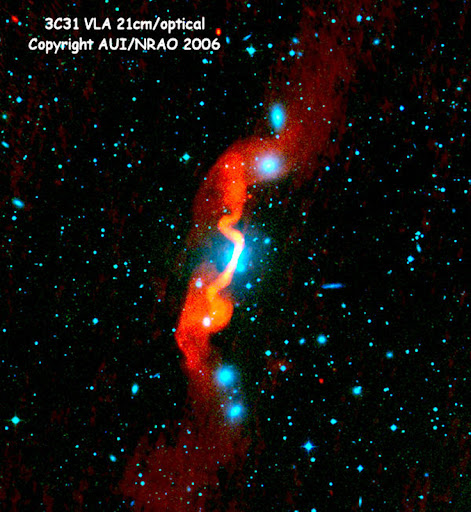

Scientific illustration
Paper 01
Paper 01

Hello!😁 I am a Special Associate Researcher in the School of Astronomy and Space Science at Nanjing University.
My previous works include X-ray spectral variabilities in blazars, warm absorber outflows, ambient circumnuclear medium around supermassive black hole, and radio activities of AGN from accretion disk scale to the large-scale environment.
Now my interests focus on AGN feedback on host galaxies and surrounding environments.
You can find my resume here and my research experience here.
Working in Prof. Tao Wang's group.
Leading works about minor-merger induced star formation rejuvenation in an elliptical radio-loud AGN host 3C 59, warm absorber outflows around the central engine of 3C 59, and radio AGN feedback to the surrounding satellite galaxies.
Working in Prof. Tao Wang's group.
Leading works about density profile of the ambient circumnuclear medium around supermassive black hole, and radio activities of AGN from accretion disk scale to host galaxy scale.
@ University of Science and Technology of China (USTC)
Studying in Prof. Yongquan Xue's group.
Leading works on X-ray spectral variability in blazars.
@ Space Research Organisation Netherlands (SRON) & Leiden University
Studying in Prof. Jelle Kaastra's group.
Participating a series of works on warm absorber outflows and obscured winds in NGC 3227, and leading one of the projects.
@ Huazhong Agriculture Univerisy (HZAU)
Cultivating a variety of crops such as rapeseed, rice, wheat, cotton, corn, and others, and learning basic plant gene extraction techniques and meteorology.
XMMM-Newton ★★★★★
NuSTAR ★★★★☆
Swift ★★★☆☆
RXTE ★★★☆☆
SPEX ★★★★★
CIGALE ★★★★★
galight ★★★★★
EAZY ★★★★☆
XSPEC ★★★☆☆
QSOfit ★★★☆☆
Photoshop ★★★★★
First-author research papers · Scientific illustrations and publication details


Email: wangyijun@nju.edu.cn
Location: Nanjing University (Xianlin Campus), 163 Xianlin Avenue, Qixia district, Nanjing, Jiangsu 210023, China
I was born in Ningwu (宁武) county in northern Shanxi (山西) Province, China, a place with incredibly beautiful scenery
The Fen River , which originates from my hometown, flows through the entire Shanxi Province and eventually empties into the Yellow River, serving as its second-largest tributary. Shanxi Province is one of the birthplaces of the Chinese nation, possessing the largest number of ancient architectural structures in China as well as a long-standing history and culture.
In daily life, I usually enjoy painting , cycling , and running , and now I'm learning to play the drums ♪♫♬